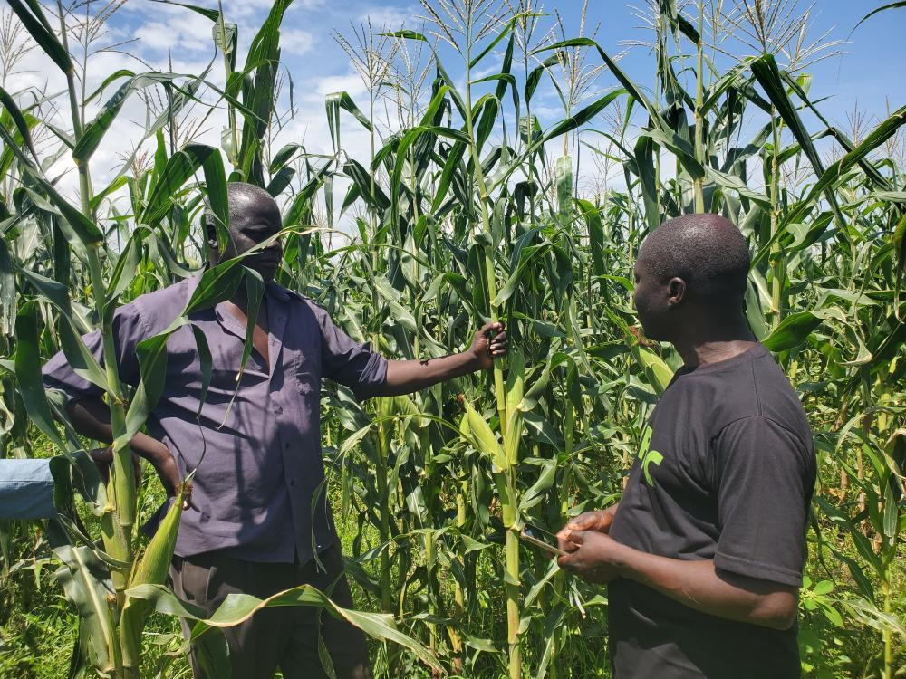
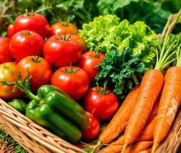
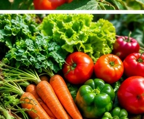
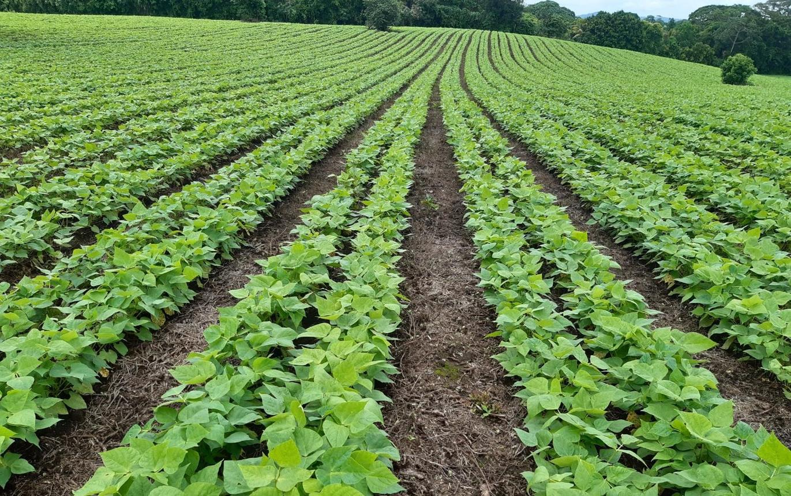

Maize
A cereal crop used for food, feed and other products.
Cereal cropWHAT FARMS CAN PRODUCE
Examples of crops and farm products commonly found in agricultural communities.

A cereal crop used for food, feed and other products.
Cereal crop
A popular vegetable crop used fresh and in prepared foods.
Vegetable
Fruits and vegetables that can support household nutrition and markets.
Fresh produce
Legume crops that provide food and can contribute to soil fertility.
Legume| No. | Category | Products / Services | Description |
|---|---|---|---|
| 1 | Cereal Crops | Maize, Rice, Millet, Wheat | Food crops grown for human consumption. |
| 2 | Vegetables | Tomatoes, Cabbages, Onions, Carrots | Fresh vegetables supplied to customers. |
| 3 | Legumes | Beans, Peas, Groundnuts, Soybeans | Protein-rich crops for food and nutrition. |
| 4 | Fresh Produce | Fruits and Fresh Vegetables | Harvested produce prepared for the market. |
| 5 | Seedlings | Young Plants and Nursery Crops | Healthy seedlings prepared for planting. |
| 6 | Soil Preparation | Cultivation and Land Preparation | Preparing fertile soil for crop production. |
| 7 | Modern Technology | Monitoring and Analysis Equipment | Technology used to monitor crop growth. |
| 8 | Farming Services | Agricultural Guidance and Support | Helping farmers improve agricultural production. |